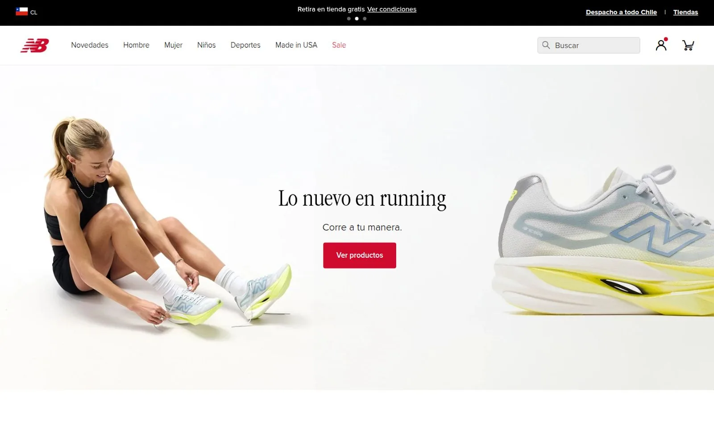

Five brands, five identities, one system
UI kits as the single source of truth between design and development: components defined once, variants resolved per brand, for five stores that look distinct.
- Context
- Sparta runs the sports retail operation of five brands in Chile — Sparta, New Balance, Head, Speedo and Trek. Each has its own identity, audience and commercial calendar, but all of them run on a shared technical base.
- The problem
- Designing five stores that look distinct from one another, each true to its own brand guidelines, without the shared base forcing everything to be reinvented every time or letting them drift into looking alike.
- What I did
- For New Balance Chile I designed the complete interface in Figma; for Sparta I designed part of the pages. I built the UI kits for the stores, which became the single source of truth between design and development: components are defined once and brand variants resolved on top, instead of redesigning screen by screen. I then built both themes myself, so the design was validated against the real implementation rather than against a mockup.
- Outcome
- Two stores in production with clearly distinct identities, and a component system that holds all five together.